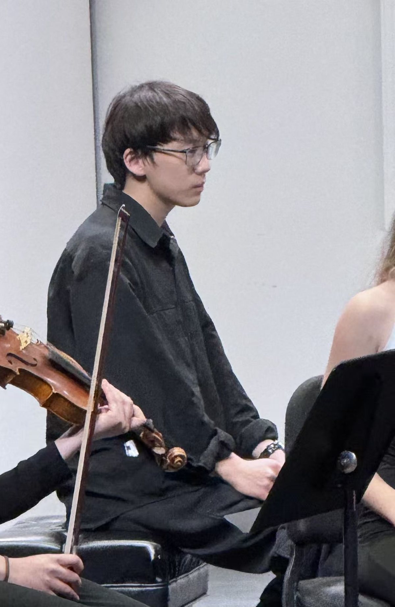

Biography

Long
Yuyang (Daniel) Shan is a music technology researcher, composer, and pianist based in Pittsburgh. He is completing two degrees at Carnegie Mellon University, a B.S. in Music and Technology (Computer Science Track) and a B.F.A. in Music Composition, and is the School of Music's 2026–27 nominee for the Presser Undergraduate Scholar Award.
His research is in music information retrieval. For his senior capstone, advised by Chris Donahue, he studies automatic piano fingering estimation, benchmarking statistical and neural models of how pianists choose fingerings. As a research assistant to Roger Dannenberg he works on score following and performance-to-score alignment, including an aligned dataset for the opera Felicità. He has also built a rule-based SATB harmony grader and solver for classroom use.
As a composer, he studies with James Whipple. His recent works include the Piano Concerto in C-sharp minor for piano and string quintet, performed by the composer at the CMU Composer Concerts in 2025–26; the Piano Scherzo in G for piano and orchestra, which the Carnegie Mellon Philharmonic will premiere in March 2027; and the Viola Concertino in B minor, now in progress. Beyond these, he has written solo piano works, choral settings of Poe and Yeats, a string quartet, a wind quintet with piano, and a song on Robert Burns.
As a pianist, he studies with Sung-Im Kim and was a finalist (second place) in the 2026 CMU Philharmonic Soloist Competition with Ravel's Piano Concerto in G. He has performed as the soloist in premieres of his own works and regularly premieres works by fellow composers; recent chamber work includes Schubert's "Trout" Quintet. Beyond these, his repertoire spans Bach, Beethoven, Chopin, Schumann, Debussy, Ravel, Scriabin, and Rachmaninoff.
Short
Yuyang (Daniel) Shan is a music technology researcher, composer, and pianist completing dual degrees in Music and Technology and Music Composition at Carnegie Mellon University. His research addresses automatic piano fingering estimation and score following; his Piano Scherzo in G will be premiered by the Carnegie Mellon Philharmonic in March 2027.